GPS Tracking - Live Tracking of Your Field Team on a Map
Employee location tracking on a live map: chosen users share their GPS position from the browser or mobile app, with day trails, distance and hours.
- Price
- $29
- Odoo versions
- 17.0
- 18.0
- 19.0
- 20.0
- Technical name
tamadoo_gps_live_tracking- License
- OPL-1

Text and screenshots below are from the Odoo 20.0 version of this module.
See where your field team is on a live map. The users you choose share their location while Odoo is open in their browser or the Odoo mobile app, with day trails, distance, tracking hours and a visible indicator.
See where everyone is

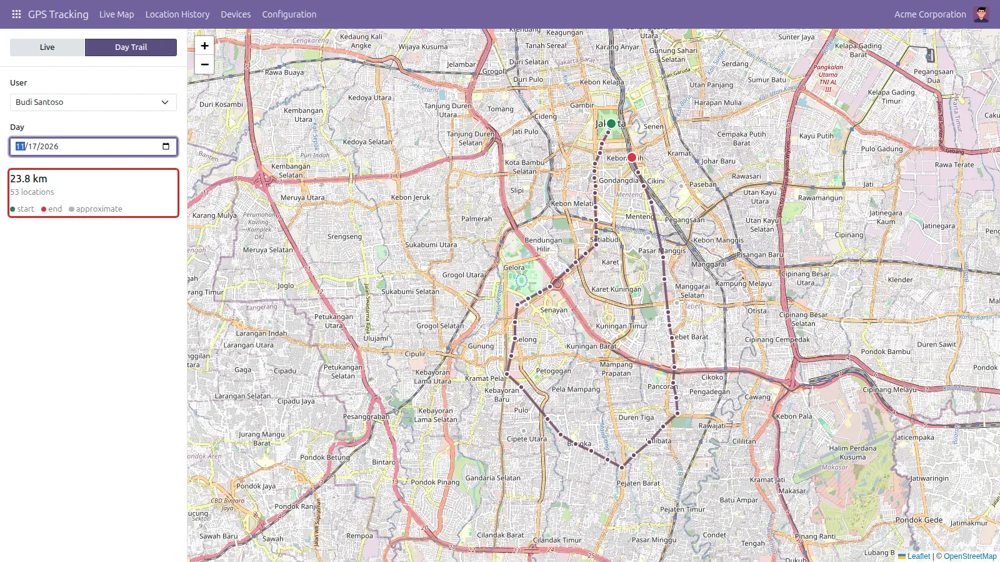
What you get
Live map
The last position of every tracked phone and browser, coloured live, last hour or offline, refreshed every 30 seconds.
Day trails
Pick a user and a day: the route with start, end, every fix and the distance travelled.
No extra app
Works in the browser and in the Odoo mobile app; each device is kept apart.
Accuracy you can trust
Every fix keeps its accuracy radius and is flagged precise or approximate; approximate fixes don't count in distances.
Opt-in per user
Nobody is tracked until a manager says so; pause everyone with one switch.
No hidden tracking
Tracked users see a location marker in the top bar, and a red one when their browser blocks it.
Tracking hours
Only share locations during working hours, in each user's own time zone.
Retention
Old locations are deleted automatically after the days you choose.
Managers only
Only GPS Tracking managers see positions, trails and history; multi-company aware.
Step by step
Choose who is tracked
GPS Tracking → Configuration → Tracked Users: Track or Stop per user (or several at once).
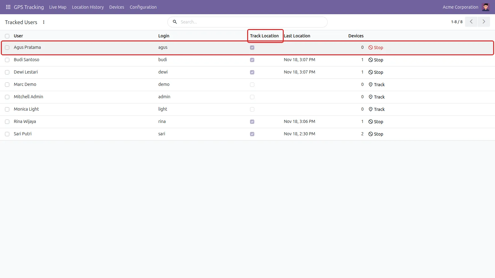
The user sees it
Agus opens Odoo and allows location: a green marker in the top bar tells him his location is shared.
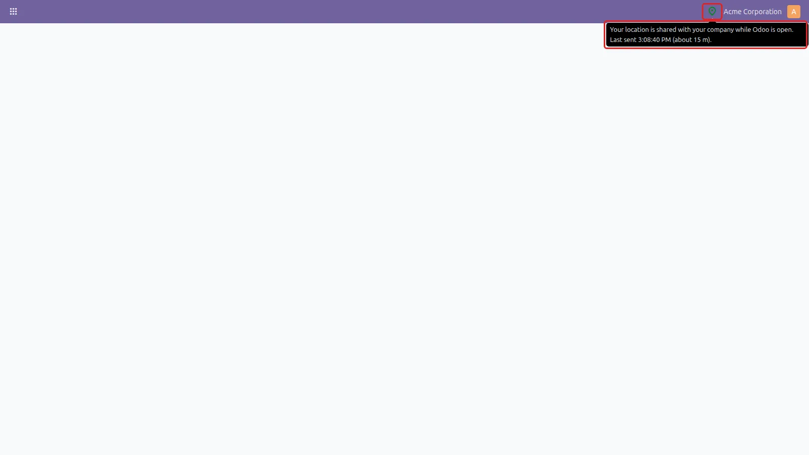
Live map
Everyone's last position; the list shows the device and how long ago.
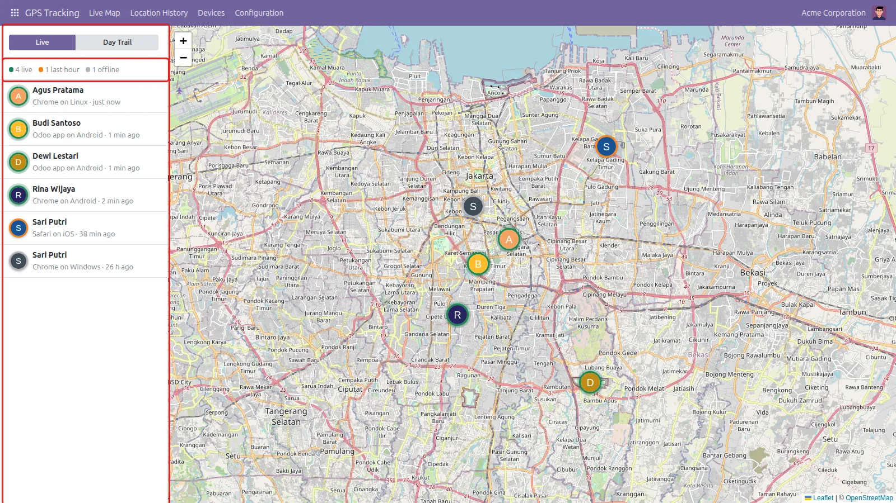
Zoom to a person
Click a name to zoom in and see device, time and accuracy.
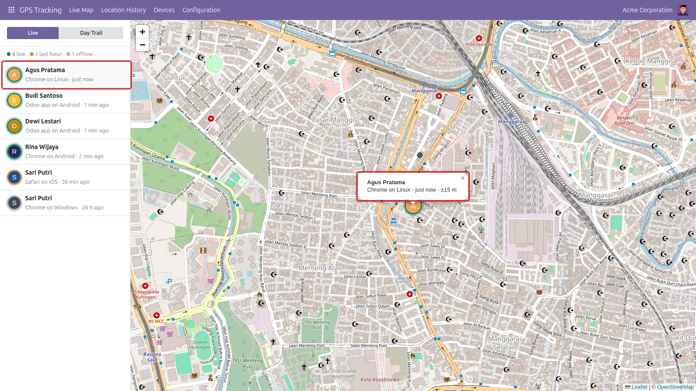
Day trail
Budi's route of the day with start, end and 23.8 km travelled; grey dots are approximate fixes.

Location history
Every fix with accuracy and precision; open any of them in OpenStreetMap. Pivot per user and day.
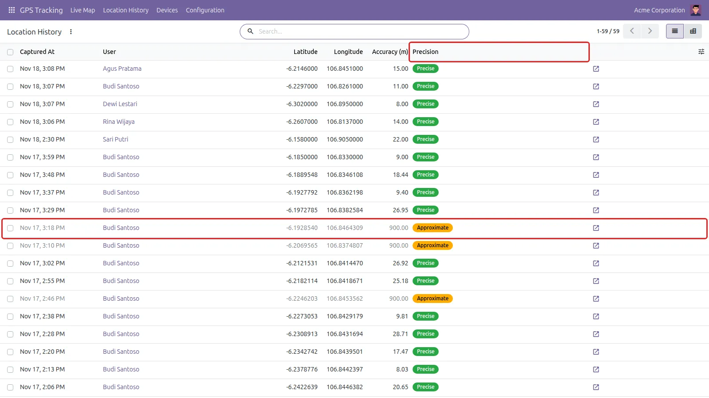
Devices
Each phone or browser separately, with its last position.
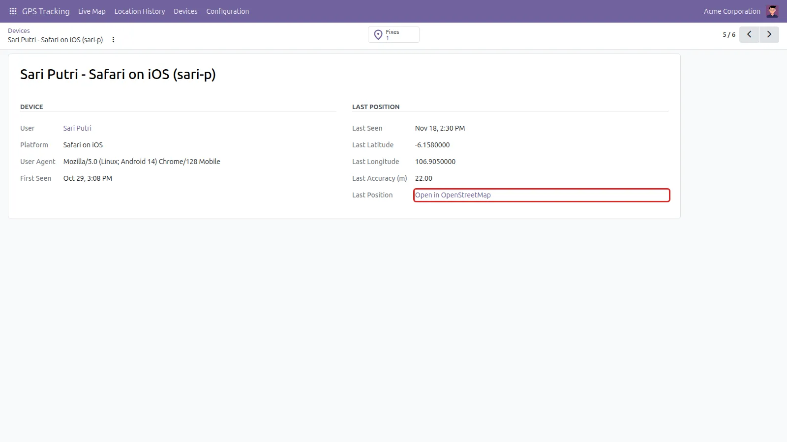
On the user
A GPS Tracking tab on the user form.
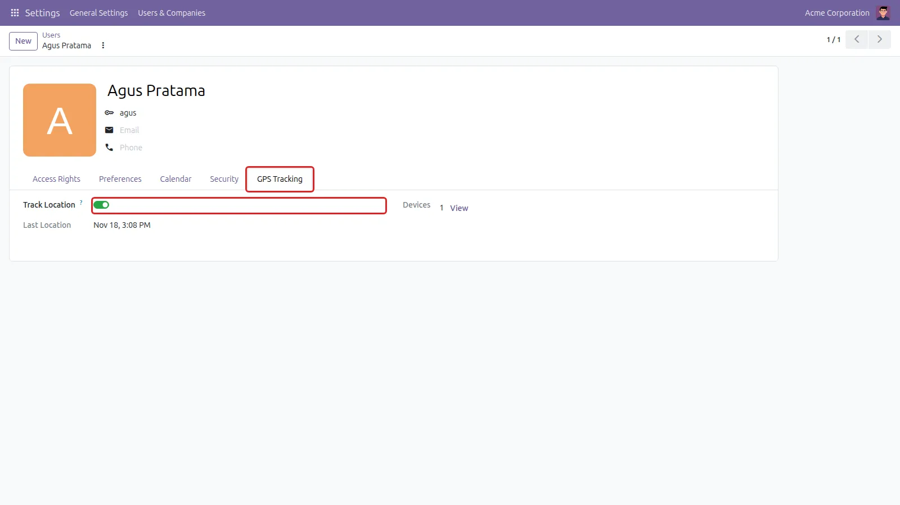
Settings
Ping interval, precise radius, tracking hours, retention, pause for everyone.
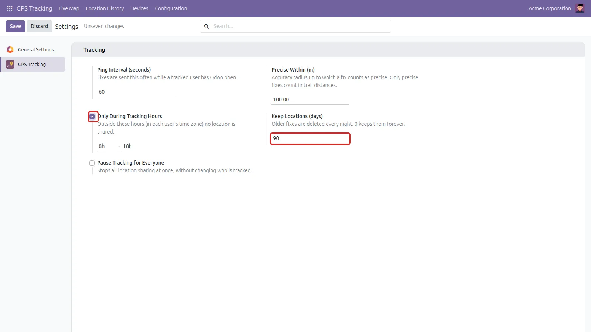
Blocked by the browser
A tracked user whose browser blocks location sees a red marker explaining what to do.
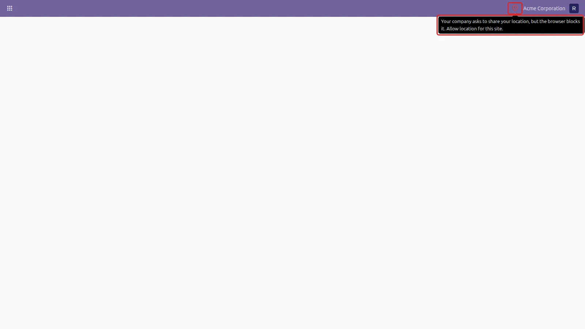
On a phone
The live map on a phone.
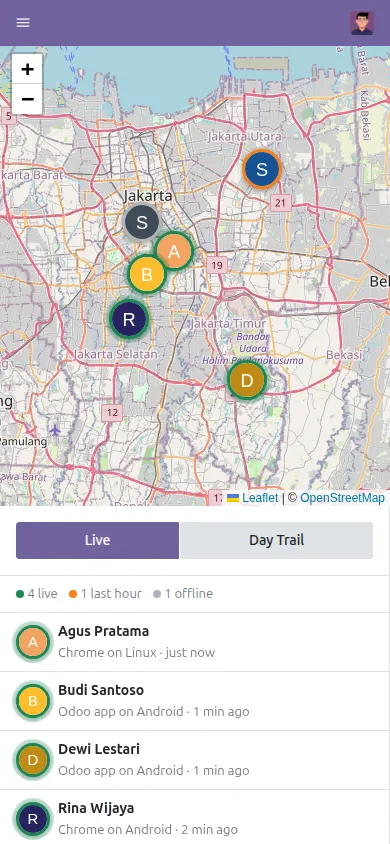
Set up in 5 minutes
- Install the module (depends on web only). Odoo must be served over https for browsers to share locations.
- Give the GPS Tracking: Manager right to whoever may see positions (the administrator has it).
- Inform your employees, then pick them in GPS Tracking → Configuration → Tracked Users.
- Optional: Settings → GPS Tracking for interval, tracking hours and retention.
- Tracked users allow location once when their browser asks; open GPS Tracking → Live Map.
Get GPS Tracking
Questions before buying? Write to tama.odoo@gmail.com.